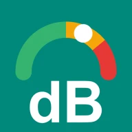
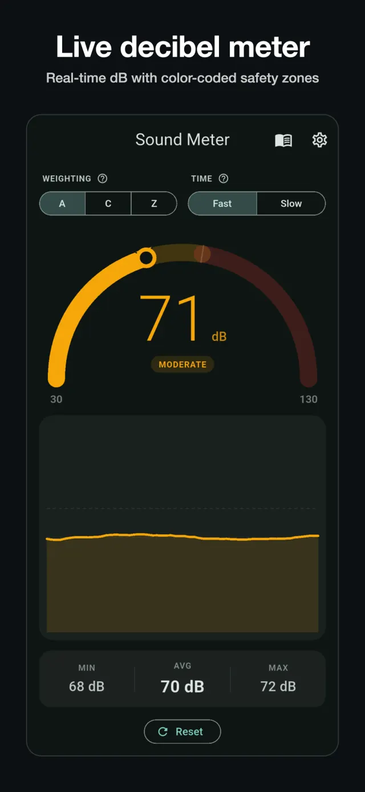
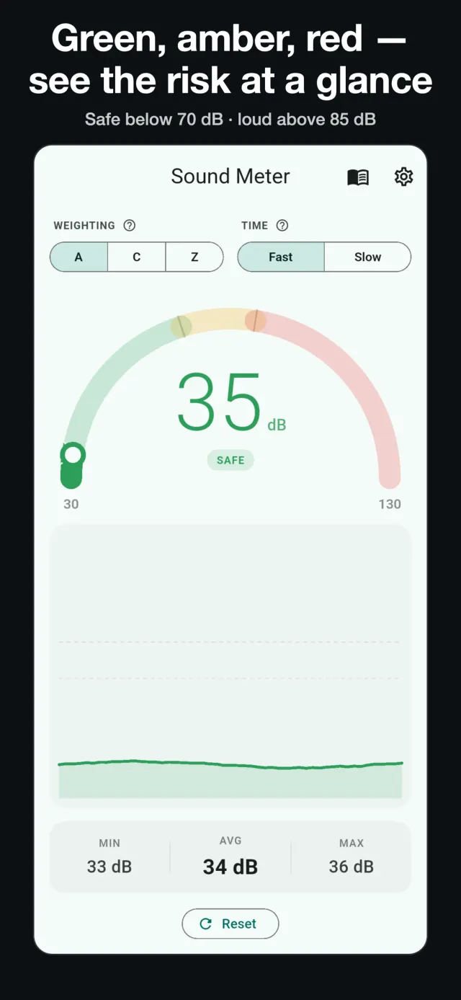
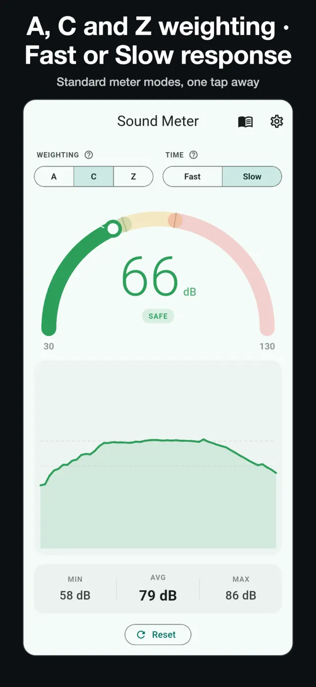
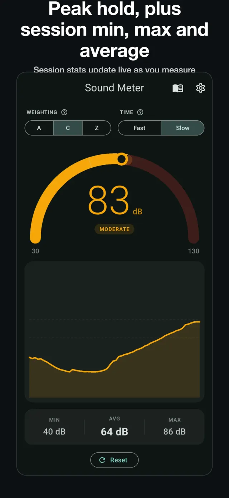
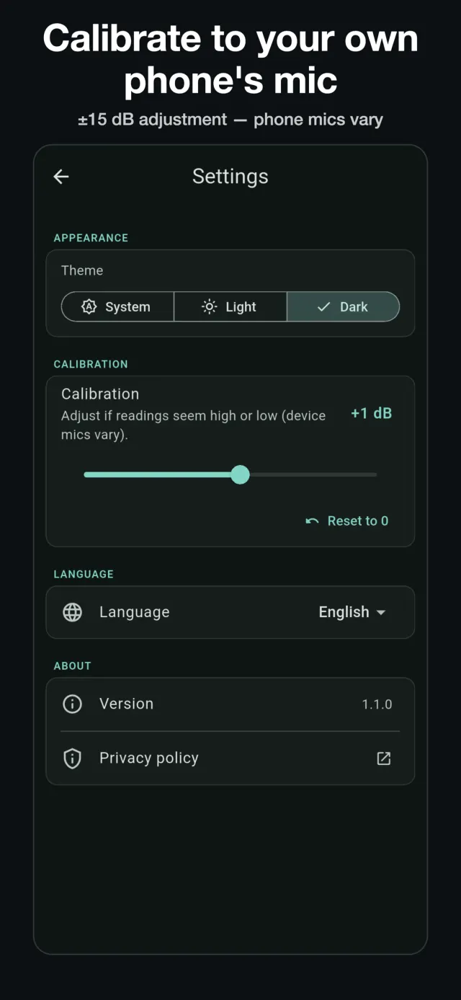
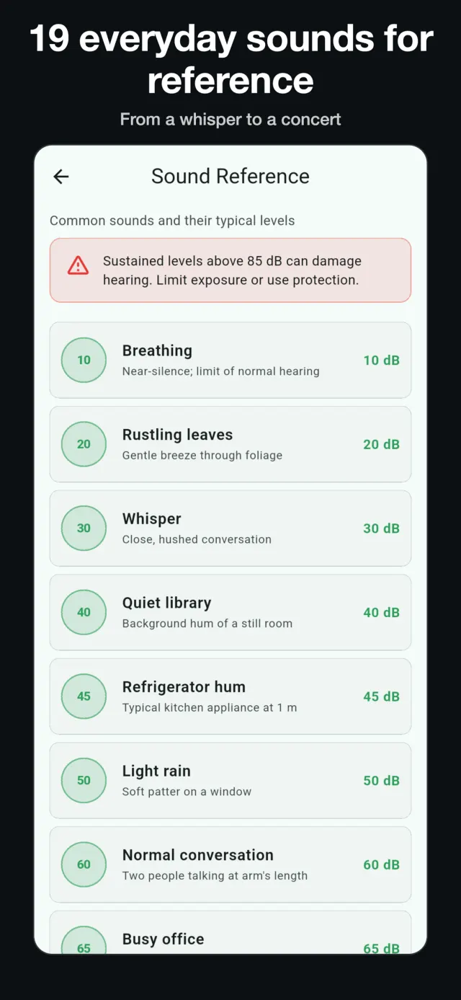
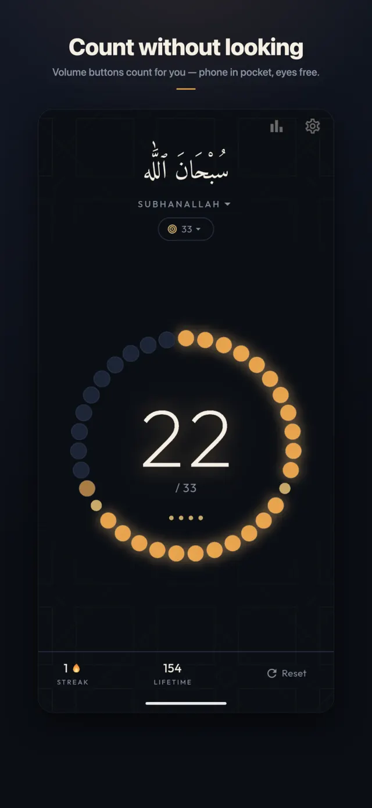
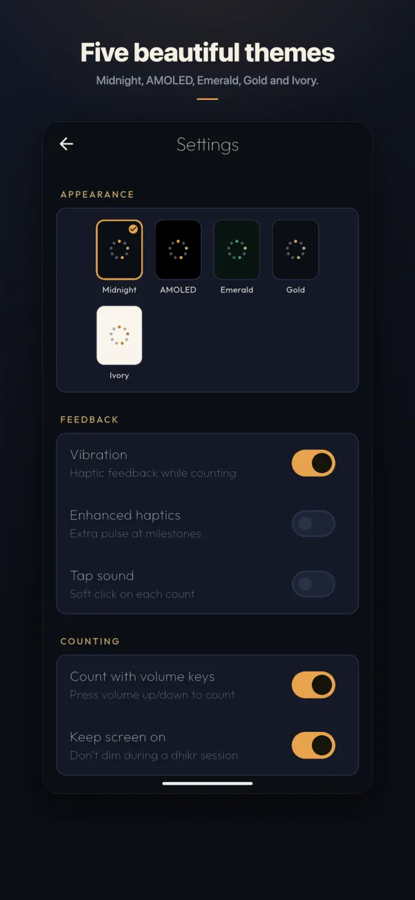

Product catalogue · 2026 edition
Software you can take at its word.
Forgeline is a one-person workshop run by Uzair Ali Murtaza in Lahore, Pakistan. It makes small Android apps the way good instruments are made: carefully built, plainly specified, honest about their limits — and free of everything that usually comes attached.
No. 01 · Measurement utility · Live since 18 Aug 2026

Sound Meter — Decibel dB Meter
A free, offline sound level meter for Android.
Open it and it measures — live decibels on a colour-coded gauge, no splash screens, no sign-up, and never an ad interrupting a reading. Built for checking how loud a room, a street, or a night's noise actually is.






- Display range
- 30 – 130 dB, colour-zoned arc gauge
- Weighting
- A / C / Z — broadband approximation*
- Time response
- Fast 125 ms · Slow 1 s
- Peak
- Peak-hold marker
- Session stats
- Minimum · maximum · average
- Calibration
- Manual slider, ±15 dB
- Reference
- 19-sound everyday level guide
- Price
- Free · no ads · no in-app purchases
- Data collected
- None — works fully offline
- Version
- 1.0.1 · Android
- Package
- com.uzairalimurtaza.soundmeter
- Released
- 18 August 2026
*Sound Meter is a screening tool. Phone microphones vary by several decibels between models, so readings are estimates — it is not, and does not claim to be, a certified IEC 61672 Type 1 or Type 2 instrument.
No. 02 · Devotional counter · Live since 25 Aug 2026
Tasbih Counter — Dhikr & Zikr
A digital misbaha for Android, made with reverence.
A 33-bead ring that fills as you count, with gold separators at 11 and 22 — the rhythm of a real misbaha, on a screen that stays quiet. Count by tapping anywhere, or with the volume buttons: phone in pocket, eyes free.





- Form
- 33-bead ring · gold separators at 11 & 22 · lap dots
- Counting
- Tap anywhere · volume buttons
- Dhikr
- 7 presets + your own custom dhikr
- Script
- Amiri Arabic calligraphy
- Habit
- Daily streak · 30-day stats
- Themes
- 5, including true-black AMOLED
- Reminder
- Optional daily reminder, off by default
- Price
- Free · no ads · no in-app purchases
- Data collected
- None — works fully offline
- Version
- 1.0.0 · Android
- Package
- com.uzairalimurtaza.tasbih
- Released
- 25 August 2026
†A devotional object, kept plain on purpose. Your counts, streaks and custom dhikr are stored on your phone and nowhere else — no account, no cloud, nothing watching.
Working principles
Working principles
Ad-free first.
Every app ships version 1.0 completely ad-free. If ads ever come, they come later, disclosed in advance — and never between you and the thing you opened the app to do.
Honest by default.
A tool that estimates says “estimate.” Specifications state their limits in plain words, and no feature is claimed that doesn’t exist.
Local by default.
Data stays on the device. No accounts, no analytics, no trackers — nothing can leak, because nothing is collected.
The workshop
About and contact
Forgeline is Uzair Ali Murtaza — one developer in Lahore, Pakistan. Every app here is designed, built, tested and shipped by one person, which is exactly why each one stays small enough to be done properly.
Email · uzairalimurtaza@gmail.com
GitHub · github.com/uzairalimurtaza